Functions¶
As you develop more complex computer code, it becomes increasingly important to organize your code into modular blocks. One important means for doing so is user-defined Python functions. User-defined functions are a lot like built-in functions that we have encountered in core Python as well as in NumPy and Matplotlib. The main difference is that user-defined functions are written by you. The idea is to define functions to simplify your code and to allow you to reuse the same code in different contexts.
The number of ways that functions are used in programming is so varied that we cannot possibly enumerate all the possibilities. As our use of Python functions in scientific program is somewhat specialized, we introduce only a few of the possible uses of Python functions, ones that are the most common in scientific programming.
User-defined functions¶
The NumPy package contains a plethora of mathematical functions. You can find a listing of the mathematical functions available through NumPy on the web page http://docs.scipy.org/doc/numpy/reference/routines.math.html. While the list may seem pretty exhaustive, you may nevertheless find that you need a function that is not available in the NumPy Python library. In those cases, you will want to write your own function.
In studies of optics and signal processing one often runs into the sinc function, which is defined as
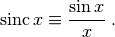
Let’s write a Python function for the sinc function. Here is our first attempt:
def sinc(x):
y = np.sin(x)/x
return y
Every function definition begins with the word def followed by the name you want to give to the function, sinc in this case, then a list of arguments enclosed in parentheses, and finally terminated with a colon. In this case there is only one argument, x, but in general there can be as many arguments as you want, including no arguments at all. For the moment, we will consider just the case of a single argument.
The indented block of code following the first line defines what the function does. In this case, the first line calculates 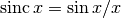 and sets it equal to y. The return statement of the last line tells Python to return the value of y to the user.
We can try it out in the IPython shell. First we type in the function definition.
In [1]: def sinc(x):
...: y = sin(x)/x
...: return y
Because we are doing this from the IPython shell, we don’t need to import NumPy; it’s preloaded. Now the function 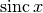 is available to be used from the IPython shell
In [2]: sinc(4)
Out[2]: -0.18920062382698205
In [3]: a = sinc(1.2)
In [4]: a
Out[4]: 0.77669923830602194
In [5]: sin(1.2)/1.2
Out[5]: 0.77669923830602194
Inputs and outputs 4 and 5 verify that the function does indeed give the same result as an explicit calculation of  .
.
You may have noticed that there is a problem with our definition of when x=0.0. Let’s try it out and see what happens
In [6]: sinc(0.0)
Out[6]: nan
IPython returns nan or “not a number”, which occurs when Python attempts a division by zero, which is not defined. This is not the desired response as is, in fact, perfectly well defined for  . You can verify this using L’Hopital’s rule, which you may have learned in your study of calculus, or you can ascertain the correct answer by calculating the Taylor series for . Here is what we get
. You can verify this using L’Hopital’s rule, which you may have learned in your study of calculus, or you can ascertain the correct answer by calculating the Taylor series for . Here is what we get

From the Taylor series, it is clear that is well-defined at and near and that, in fact, 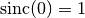. Let’s modify our function so that it gives the correct value for x=0.
In [7]: def sinc(x):
...: if x==0.0:
...: y = 1.0
...: else:
...: y = sin(x)/x
...: return y
In [8]: sinc(0)
Out[8]: 1.0
In [9]: sinc(1.2)
Out[9]: 0.77669923830602194
Now our function gives the correct value for x=0 as well as for values different from zero.
Looping over arrays in user-defined functions¶
The code for works just fine when the argument is a single number or a variable that represents a single number. However, if the argument is a NumPy array, we run into a problem, as illustrated below.
In [10]: x = arange(0, 5., 0.5)
In [11]: x
Out[11]: array([ 0. , 0.5, 1. , 1.5, 2. , 2.5, 3. , 3.5,
4. , 4.5])
In [12]: sinc(x)
----------------------------------------------------------
ValueError Traceback (most recent call last)
----> 1 sinc(x)
1 def sinc(x):
----> 2 if x==0.0:
3 y = 1.0
4 else:
5 y = np.sin(x)/x
ValueError: The truth value of an array with more than one
element is ambiguous.
The if statement in Python is set up to evaluate the truth value of a single variable, not of multielement arrays. When Python is asked to evaluate the truth value for a multi-element array, it doesn’t know what to do and therefore returns an error.
An obvious way to handle this problem is to write the code so that it processes the array one element at a time, which you could do using a for loop, as illustrated below.
1 2 3 4 5 6 7 8 9 10 11 12 13 14 15 16 17 18 19 | def sinc(x):
y = [] # creates an empty list to store results
for xx in x: # loops over all elements in x array
if xx==0.0: # adds result of 1.0 to y list if
y += [1.0] # xx is zero
else: # adds result of sin(xx)/xx to y list if
y += [np.sin(xx)/xx] # xx is not zero
return np.array(y) # converts y to array and returns array
import numpy as np
import matplotlib.pyplot as plt
x = np.linspace(-10, 10, 256)
y = sinc(x)
plt.plot(x, y)
plt.axhline(color="gray", zorder=-1)
plt.axvline(color="gray", zorder=-1)
plt.show()
|
The for loop evaluates the elements of the x array one by one and appends the results to the list y one by one. When it is finished, it converts the list to an array and returns the array. The code following the function definition plots as a function of  .
.
In the program above, you may have noticed that the NumPy library is imported after the sinc(x) function definition. As the function uses the NumPy functions sin and array, you may wonder how this program can work. Doesn’t the import numpy statement have to be called before any NumPy functions are used? The answer it an emphatic “YES”. What you need to understand is that the function definition is not executed when it is defined, nor can it be as it has no input x data to process. That part of the code is just a definition. The first time the code for the sinc(x) function is actually executed is when it is called on line 14 of the program, which occurs after the NumPy library is imported in line 10. The figure below shows the plot of the function generated by the above code.
Plot of user-defined sinc(x) function.
Fast array processing in user-defined functions¶
While using loops to process arrays works just fine, it is usually not the best way to accomplish the task in Python. The reason is that loops in Python are executed rather slowly. To deal with this problem, the developers of NumPy introduced a number of functions designed to process arrays quickly and efficiently. For the present case, what we need is a conditional statement or function that can process arrays directly. The function we want is called where and it is a part of the NumPy library. There where function has the form
where(condition, output if True, output if False)
The first argument of the where function is a conditional statement involving an array. The where function applies the condition to the array element by element, and returns the second argument for those array elements for which the condition is True, and returns the third argument for those array elements that are False. We can apply it to the sinc(x) function as follows
def sinc(x):
z = np.where(x==0.0, 1.0, np.sin(x)/x)
return z
The where function creates the array y and sets the elements of y equal to 1.0 where the corresponding elements of x are zero, and otherwise sets the corresponding elements to sin(x)/x. This code executes much faster, 25 to 100 times, depending on the size of the array, than the code using a for loop. Moreover, the new code is much simpler to write and read. An additional benefit of the where function is that it can handle single variables and arrays equally well. The code we wrote for the sinc function with the for loop cannot handle single variables. Of course we could rewrite the code so that it did, but the code becomes even more clunky. It’s better just to use NumPy’s where function.
The moral of the story¶
The moral of the story is that you should avoid using for and while loops to process arrays in Python programs whenever an array-processing method is available. As a beginning Python programmer, you may not always see how to avoid loops, and indeed, avoiding them is not always possible, but you should look for ways to avoid loops, especially loops that iterate a large number of times. As you become more experienced, you will find that using array-processing methods in Python becomes more natural. Using them can greatly speed up the execution of your code, especially when working with large arrays.
Functions with more (or less) than one input or output¶
Python functions can have any number of input arguments and can return any number of variables. For example, suppose you want a function that outputs 
 coordinates around a circle of radius
coordinates around a circle of radius  centered at the point
centered at the point  . The inputs to the function would be ,
. The inputs to the function would be ,  ,
,  , and . The outputs would be the coordinates. The following code implements this function.
, and . The outputs would be the coordinates. The following code implements this function.
def circle(r, x0, y0, n):
theta = np.linspace(0., 2.*np.pi, n, endpoint=False)
x = r * np.cos(theta)
y = r * np.sin(theta)
return x0+x, y0+y
This function has four inputs and two outputs. In this case, the four inputs are simple numeric variables and the two outputs are NumPy arrays. In general, the inputs and outputs can be any combination of data types: arrays, lists, strings, etc. Of course, the body of the function must be written to be consistent with the prescribed data types.
Functions can also return nothing to the calling program but just perform some task. For example, here is a program that clears the terminal screen
import subprocess
import platform
def clear():
subprocess.Popen( "cls" if platform.system() ==
"Windows" else "clear", shell=True)
The function is invoked by typing clear(). It has no inputs and no outputs but it performs a useful task. This function uses two standard Python libraries, subprocess and platform that are useful for performing computer system tasks. It’s not important that you know anything about them at this point. We simply use them here to demonstrate a useful cross-platform function that has no inputs and returns no values.
Positional and keyword arguments¶
It is often useful to have function arguments that have some default setting. This happens when you want an input to a function to have some standard value or setting most of the time, but you would like to reserve the possibility of giving it some value other than the default value.
For example, in the program circle from the previous section, we might decide that under most circumstances, we want n=12 points around the circle, like the points on a clock face, and we want the circle to be centered at the origin. In this case, we would rewrite the code to read
def circle(r, x0=0.0, y0=0.0, n=12):
theta = np.linspace(0., 2.*np.pi, n, endpoint=False)
x = r * np.cos(theta)
y = r * np.sin(theta)
return x0+x, y0+y
The default values of the arguments x0, y0, and n are specified in the argument of the function definition in the def line. Arguments whose default values are specified in this manner are called keyword arguments, and they can be omitted from the function call if the user is content using those values. For example, writing circle(4) is now a perfectly legal way to call the circle function and it would produce 12 coordinates centered about the origin  . On the other hand, if you want the values of x0, y0, and n to be something different from the default values, you can specify their values as you would have before.
. On the other hand, if you want the values of x0, y0, and n to be something different from the default values, you can specify their values as you would have before.
If you want to change only some of the keyword arguments, you can do so by using the keywords in the function call. For example, suppose you are content with have the circle centered on but you want only 6 points around the circle rather than 12. Then you would call the circle function as follows:
circle(2, n=6)
The unspecified keyword arguments keep their default values of zero but the number of points n around the circle is now 6 instead of the default value of 12.
The normal arguments without keywords are called positional arguments; they have to appear before any keyword arguments and, when the function is called, must be supplied values in the same order as specified in the function definition. The keyword arguments, if supplied, can be supplied in any order providing they are supplied with their keywords. If supplied without their keywords, they too must be supplied in the order they appear in the function definition. The following function calls to circle both give the same output.
In [13]: circle(3, n=3, y0=4, x0=-2)
Out[13]: (array([ 1. , -3.5, -3.5]),
array([ 4. , 6.59807621, 1.40192379]))
In [14]: circle(3, -2, 4, 3) # w/o keywords, arguments
# supplied in order
Out[14]: (array([ 1. , -3.5, -3.5]), array([ 4. ,
6.59807621, 1.40192379]))
By now you probably have noticed that we used the keyword argument endpoint in calling linspace in our definition of the circle function. The default value of endpoint is True, meaning that linspace includes the endpoint specified in the second argument of linspace. We set it equal to False so that the last point was not included. Do you see why?
Variable number of arguments¶
While it may seem odd, it is sometimes useful to leave the number of arguments unspecified. A simple example is a function that computes the product of an arbitrary number of numbers:
def product(*args):
print("args = {}".format(args))
p = 1
for num in args:
p *= num
return p
In [15]: product(11., -2, 3)
args = (11.0, -2, 3)
Out[15]: -66.0
In [16]: product(2.31, 7)
args = (2.31, 7)
Out[16]: 16.17
The print("args...) statement in the function definition is not necessary, of course, but is put in to show that the argument args is a tuple inside the function. Here it used because one does not know ahead of time how many numbers are to be multiplied together.
The *args argument is also quite useful in another context: when passing the name of a function as an argument in another function. In many cases, the function name that is passed may have a number of parameters that must also be passed but aren’t known ahead of time. If this all sounds a bit confusing—functions calling other functions—a concrete example will help you understand.
Suppose we have the following function that numerically computes the value of the derivative of an arbitrary function  :
:
def deriv(f, x, h=1.e-9, *params):
return (f(x+h, *params)-f(x-h, *params))/(2.*h)
The argument *params is an optional positional argument. We begin by demonstrating the use of the function deriv without using the optional *params argument. Suppose we want to compute the derivative of the function  . First, we define the function
. First, we define the function
def f0(x):
return 3.*x**5
Now let’s find the derivative of at  using the function deriv:
using the function deriv:
In [17]: deriv(f0, 3)
Out[17]: 1620.0001482502557
The exact result is 1620, so our function to numerically calculate the derivative works pretty well.
Suppose we had defined a more general function  as follows:
as follows:
def f1(x, a, p):
return a*x**p
Suppose we want to calculate the derivative of this function for a particular set of parameters  and
and  . Now we face a problem, because it might seem that there is no way to pass the parameters and to the deriv function. Moreover, this is a generic problem for functions such as deriv that use a function as an input, because different functions you want to use as inputs generally come with different parameters. Therefore, we would like to write our program deriv so that it works, irrespective of how many parameters are needed to specify a particular function.
. Now we face a problem, because it might seem that there is no way to pass the parameters and to the deriv function. Moreover, this is a generic problem for functions such as deriv that use a function as an input, because different functions you want to use as inputs generally come with different parameters. Therefore, we would like to write our program deriv so that it works, irrespective of how many parameters are needed to specify a particular function.
This is what the optional positional argument *params defined in deriv is for: to pass parameters of f1, like and  , through deriv. To see how this works, let’s set and to be 4 and 5, respectively, the same values we used in the definition of f0, so that we can compare the results:
, through deriv. To see how this works, let’s set and to be 4 and 5, respectively, the same values we used in the definition of f0, so that we can compare the results:
In [16]: deriv(f1, 3, 1.e-9, 4, 5)
Out[16]: 1620.0001482502557
We get the same answer as before, but this time we have used deriv with a more general form of the function .
The order of the parameters is important. The function deriv uses x, the first argument of f1, as its principal argument, and then uses a and p, in the same order that they are defined in the function f1, to fill in the additional arguments—the parameters—of the function f1.
Optional arguments must appear after the regular positional and keyword arguments in a function call. The order of the arguments must adhere to the following convention:
def func(pos1, pos2, ..., keywd1, keywd2, ..., *args, **kwargs):
That is, the order of arguments is: positional arguments first, then keyword arguments, then optional positional arguments (*args), then optional keyword arguments (**kwargs). Note that to use the *params argument, we had to explicitly include the keyword argument h even though we didn’t need to change it from its default value.
Python also allows for a variable number of keyword arguments—**kwargs—in a function call. While *args is a tuple, kwargs is a dictionary, so that the value of an optional keyword argument is accessed through its dictionary key.
Passing data to and from functions¶
Functions are like mini-programs within the larger programs that call them. Each function has a set of variables with certain names that are to some degree or other isolated from the calling program. We shall get more specific about just how isolated those variables are below, but before we do, we introduce the concept of a namespace. Each function has its own namespace, which is essentially a mapping of variable names to objects, like numerics, strings, lists, and so forth. It’s a kind of dictionary. The calling program has its own namespace, distinct from that of any functions it calls. The distinctiveness of these namespaces plays an important role in how functions work, as we shall see below.
Variables and arrays created entirely within a function¶
An important feature of functions is that variables and arrays created entirely within a function cannot be seen by the program that calls the function unless the variable or array is explicitly passed to the calling program in the return statement. This is important because it means you can create and manipulate variables and arrays, giving them any name you please, without affecting any variables or arrays outside the function, even if the variables and arrays inside and outside a function share the same name.
To see what how this works, let’s rewrite our program to plot the sinc function using the sinc function definition that uses the where function.
1 2 3 4 5 6 7 8 9 10 11 12 13 14 | def sinc(x):
z = np.where(x==0.0, 1.0, np.sin(x)/x)
return z
import numpy as np
import matplotlib.pyplot as plt
x = np.linspace(-10, 10, 256)
y = sinc(x)
plt.plot(x, y)
plt.axhline(color="gray", zorder=-1)
plt.axvline(color="gray", zorder=-1)
plt.show()
|
Running this program produces a plot like the plot of sinc shown in the previous section. Notice that the array variable z is only defined within the function definition of sinc. If we run the program from the IPython terminal, it produces the plot, of course. Then if we ask IPython to print out the arrays, x, y, and z, we get some interesting and informative results, as shown below.
In [15]: run sinc3.py
In [16]: x
Out[16]: array([-10. , -9.99969482, -9.99938964, ...,
9.99938964, 9.99969482, 10. ])
In [17]: y
Out[17]: array([-0.05440211, -0.05437816, -0.0543542 , ...,
-0.0543542 , -0.05437816, -0.05440211])
In [18]: z
---------------------------------------------------------
NameError Traceback (most recent call last)
NameError: name 'z' is not defined
When we type in x at the In [16]: prompt, IPython prints out the array x (some of the output is suppressed because the array x has many elements); similarly for y. But when we type z at the In [18]: prompt, IPython returns a NameError because z is not defined. The IPython terminal is working in the same namespace as the program. But the namespace of the sinc function is isolated from the namespace of the program that calls it, and therefore isolated from IPython. This also means that when the sinc function ends with return z, it doesn’t return the name z, but instead assigns the values in the array z to the array y, as directed by the main program in line 9.
Passing variables and arrays to functions: mutable and immutable objects¶
What happens to a variable or an array passed to a function when the variable or array is changed within the function? It turns out that the answers are different depending on whether the variable passed is a simple numeric variable, string, or tuple, or whether it is an array or list. The program below illustrates the different ways that Python handles single variables vs the way it handles lists and arrays.
1 2 3 4 5 6 7 8 9 10 11 12 13 14 15 16 17 18 19 20 21 22 23 24 25 26 27 28 29 30 31 32 33 34 35 36 37 38 39 40 41 42 43 | def test(s, v, t, l, a):
s = "I am doing fine"
v = np.pi**2
t = (1.1, 2.9)
l[-1] = 'end'
a[0] = 963.2
return s, v, t, l, a
import numpy as np
s = "How do you do?"
v = 5.0
t = (97.5, 82.9, 66.7)
l = [3.9, 5.7, 7.5, 9.3]
a = np.array(l)
print('*************')
print("s = {0:s}".format(s))
print("v = {0:5.2f}".format(v))
print("t = {0:s}".format(t))
print("l = {0:s}".format(l))
print("a = "), # comma suppresses line feed
print(a)
print('*************')
print('*call "test"*')
s1, v1, t1, l1, a1 = test(s, v, t, l, a)
print('*************')
print("s1 = {0:s}".format(s1))
print("v1 = {0:5.2f}".format(v1))
print("t1 = {0:s}".format(t1))
print("l1 = {0:s}".format(l1))
print("a1 = "),
print(a1)
print('*************')
print("s = {0:s}".format(s))
print("v = {0:5.2f}".format(v))
print("t = {0:s}".format(t))
print("l = {0:s}".format(l))
print("a = "), # comma suppresses line feed
print(a)
print('*************')
|
The function test has five arguments, a string s, a numerical variable v, a tuple t, a list l, and a NumPy array a. test modifies each of these arguments and then returns the modified s, v, t, l, a. Running the program produces the following output.
In [17]: run passingVars.py
*************
s = How do you do?
v = 5.00
t = (97.5, 82.9, 66.7)
l = [3.9, 5.7, 7.5, 9.3]
a = [ 3.9 5.7 7.5 9.3]
*************
*call "test"*
*************
s1 = I am doing fine
v1 = 9.87
t1 = (1.1, 2.9)
l1 = [3.9, 5.7, 7.5, 'end']
a1 = [ 963.2 5.7 7.5 9.3]
*************
s = How do you do?
v = 5.00
t = (97.5, 82.9, 66.7)
l = [3.9, 5.7, 7.5, 'end']
a = [ 963.2 5.7 7.5 9.3]
*************
The program prints out three blocks of variables separated by asterisks. The first block merely verifies that the contents of s, v, t, l, and a are those assigned in lines 10-13. Then the function test is called. The next block prints the output of the call to the function test, namely the variables s1, v1, t1, l1, and a1. The results verify that the function modified the inputs as directed by the test function.
The third block prints out the variables s, v, t, l, and a from the calling program after the function test was called. These variables served as the inputs to the function test. Examining the output from the third printing block, we see that the values of the string s, the numeric variable v, and the contents of t are unchanged after the function call. This is probably what you would expect. On the other hand, we see that the list l and the array a are changed after the function call. This might surprise you! But these are important points to remember, so important that we summarize them in two bullet points here:
- Changes to string, variable, and tuple arguments of a function within the function do not affect their values in the calling program.
- Changes to values of elements in list and array arguments of a function within the function are reflected in the values of the same list and array elements in the calling function.
The point is that simple numerics, strings and tuples are immutable while lists and arrays are mutable. Because immutable objects can’t be changed, changing them within a function creates new objects with the same name inside of the function, but the old immutable objects that were used as arguments in the function call remain unchanged in the calling program. On the other hand, if elements of mutable objects like those in lists or arrays are changed, then those elements that are changed inside the function are also changed in the calling program.
Methods and attributes¶
You have already encountered quite a number of functions that are part of either NumPy or Python or Matplotlib. But there is another way in which Python implements things that act like functions. To understand what they are, you need to understand that variables, strings, arrays, lists, and other such data structures in Python are not merely the numbers or strings we have defined them to be. They are objects. In general, an object in Python has associated with it a number of attributes and a number of specialized functions called methods that act on the object. How attributes and methods work with objects is best illustrated by example.
Let’s start with the NumPy array. A NumPy array is a Python object and therefore has associated with it a number of attributes and methods. Suppose, for example, we write a = random.random(10), which creates an array of 10 uniformly distributed random numbers between 0 and 1. An example of an attribute of an array is the size or number of elements in the array. An attribute of an object in Python is accessed by typing the object name followed by a period followed by the attribute name. The code below illustrates how to access two different attributes of an array, it’s size and its data type.
In [18]: a = random.random(10)
In [19]: a.size
Out[19]: 10
In [20]: a.dtype
Out[20]: dtype('float64')
Any object in Python can and in general does have a number of attributes that are accessed in just the way demonstrated above, with a period and the attribute name following the name of the particular object. In general, attributes involve properties of the object that are stored by Python with the object and require no computation. Python just looks up the attribute and returns its value.
Objects in Python also have associated with them a number of specialized functions called methods that act on the object. In contrast to attributes, methods generally involve Python performing some kind of computation. Methods are accessed in a fashion similar to attributes, by appending a period followed the method’s name, which is followed by a pair of open-close parentheses, consistent with methods being a kind of function that acts on the object. Often methods are used with no arguments, as methods by default act on the object whose name they follow. In some cases. however, methods can take arguments. Examples of methods for NumPy arrays are sorting, calculating the mean, or standard deviation of the array. The code below illustrates a few array methods.
In [21]: a
Out[21]:
array([ 0.859057 , 0.27228037, 0.87780026, 0.14341207,
0.05067356, 0.83490135, 0.54844515, 0.33583966,
0.31527767, 0.15868803])
In [22]: a.sum() # sum
Out[22]: 4.3963751104791005
In [23]: a.mean() # mean or average
Out[23]: 0.43963751104791005
In [24]: a.var() # variance
Out[24]: 0.090819477333711512
In [25]: a.std() # standard deviation
Out[25]: 0.30136270063448711
In [26]: a.sort() # sort small to large
In [27]: a
Out[27]:
array([ 0.05067356, 0.14341207, 0.15868803, 0.27228037,
0.31527767, 0.33583966, 0.54844515, 0.83490135,
0.859057 , 0.87780026])
In [28]: a.clip(0.3, 0.8)
Out[29]:
array([ 0.3 , 0.3 , 0.3 , 0.3 ,
0.31527767, 0.33583966, 0.54844515, 0.8 ,
0.8 , 0.8 ])
The clip() method provides an example of a method that takes an argument, in this case the arguments are the lower and upper values to which array elements are cutoff if their values are outside the range set by these values.
Example: linear least squares fitting¶
In this section we illustrate how to use functions and methods in the context of modeling experimental data.
In science and engineering we often have some theoretical curve or fitting function that we would like to fit to some experimental data. In general, the fitting function is of the form  , where is the independent variable and , ,
, where is the independent variable and , ,  , ... are parameters to be adjusted so that the function best fits the experimental data. For example, suppose we had some data of the velocity vs time for a falling mass. If the mass falls only a short distance such that its velocity remains well below its terminal velocity, we can ignore air resistance. In this case, we expect the acceleration to be constant and the velocity to change linearly in time according to the equation
, ... are parameters to be adjusted so that the function best fits the experimental data. For example, suppose we had some data of the velocity vs time for a falling mass. If the mass falls only a short distance such that its velocity remains well below its terminal velocity, we can ignore air resistance. In this case, we expect the acceleration to be constant and the velocity to change linearly in time according to the equation
(1)
where  is the local gravitational acceleration. We can fit the data graphically, say by plotting it as shown below in Fig. 4.6 and then drawing a line through the data. When we draw a straight line through a data, we try to minimize the distance between the points and the line, globally averaged over the whole data set.
is the local gravitational acceleration. We can fit the data graphically, say by plotting it as shown below in Fig. 4.6 and then drawing a line through the data. When we draw a straight line through a data, we try to minimize the distance between the points and the line, globally averaged over the whole data set.
Velocity vs time for falling mass.
While this can give a reasonable estimate of the best fit to the data, the procedure is rather ad hoc. We would prefer to have a more well-defined analytical method for determining what constitutes a “best fit”. One way to do that is to consider the sum
(2)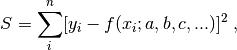
where  and 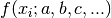 are the values of the experimental data and the fitting function, respectively, at
and 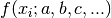 are the values of the experimental data and the fitting function, respectively, at  , and
, and  is the square of their difference summed over all data points. The quantity is a sort of global measure of how much the the fit differs from the experimental data .
is the square of their difference summed over all data points. The quantity is a sort of global measure of how much the the fit differs from the experimental data .
Notice that for a given set of data points 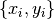, is a function only of the fitting parameters 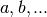, that is, 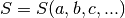. One way of defining a best fit, then, is to find the values of the fitting parameters that minimize the .
In principle, finding the values of the fitting parameters that minimize the is a simple matter. Just set the partial derivatives of with respect to the fitting parameter equal to zero and solve the resulting system of equations:
(3)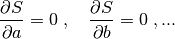
Because there are as many equations as there are fitting paramters, we should be able to solve the system of equations and find the values of the fitting parameters that minimize . Solving those systems of equations is straightforward if the fitting function 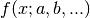 is linear in the fitting parameters. Some examples of fitting functions linear in the fitting parameters are:
(4)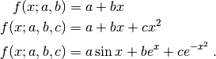
For fitting functions such as these, taking the partial derivatives with respect to the fitting parameters, as proposed in (3), results in a set of algebraic equations that are linear in the fitting paramters Because they are linear, these equations can be solved in a straightforward manner.
For cases in which the fitting function is not linear in the fitting parameters, one can generally still find the values of the fitting parameters that minimize but finding them requires more work, which goes beyond our immediate interests here.
Linear regression¶
We start by considering the simplest case, fitting a straight line to a data set, such as the one shown in Fig. 4.6 above. Here the fitting function is  , which is linear in the fitting parameters and . For a straight line, the sum in (2) becomes
, which is linear in the fitting parameters and . For a straight line, the sum in (2) becomes
(5)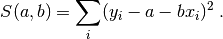
Finding the best fit in this case corresponds to finding the values of the fitting parameters and for which 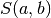 is a minimum. To find the minimum, we set the derivatives of equal to zero:
(6)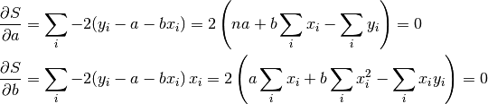
Dividing both equations by  leads to the equations
leads to the equations
(7)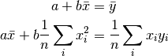
where
(8)
Solving Eq. (7) for the fitting parameters gives
(9)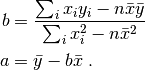
Noting that  and 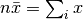, the results can be written as
and 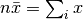, the results can be written as
(10)
While Eqs. (9) and (10) are equivalent analytically, Eq. (10) is preferred for numerical calculations because Eq. (10) is less sensitive to roundoff errors. Here is a Python function implementing this algorithm:
1 2 3 4 5 6 7 | def LineFit(x, y):
''' Returns slope and y-intercept of linear fit to (x,y)
data set'''
xavg = x.mean()
slope = (y*(x-xavg)).sum()/(x*(x-xavg)).sum()
yint = y.mean()-slope*xavg
return slope, yint
|
It’s hard to imagine a simpler implementation of the linear regression algorithm.
Linear regression with weighting:  ¶
¶
The linear regression routine of the previous section weights all data points equally. That is fine if the absolute uncertainty is the same for all data points. In many cases, however, the uncertainty is different for different points in a data set. In such cases, we would like to weight the data that has smaller uncertainty more heavily than those data that have greater uncertainty. For this case, there is a standard method of weighting and fitting data that is known as (or chi-squared) fitting. In this method we suppose that associated with each  data point is an uncertainty in the value of of
data point is an uncertainty in the value of of  . In this case, the “best fit” is defined as the the one with the set of fitting parameters that minimizes the sum
. In this case, the “best fit” is defined as the the one with the set of fitting parameters that minimizes the sum
(11)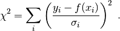
Setting the uncertainties 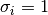 for all data points yields the same sum we introduced in the previous section. In this case, all data points are weighted equally. However, if  varies from point to point, it is clear that those points with large contribute less to the sum than those with small . Thus, data points with large are weighted less than those with small .
varies from point to point, it is clear that those points with large contribute less to the sum than those with small . Thus, data points with large are weighted less than those with small .
To fit data to a straight line, we set and write
(12)
Finding the minimum for  follows the same procedure used for finding the minimum of in the previous section. The result is
follows the same procedure used for finding the minimum of in the previous section. The result is
(13)
where
(14)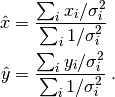
For a fit to a straight line, the overall quality of the fit can be measured by the reduced chi-squared parameter
(15)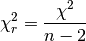
where is given by Eq. (11) evaluated at the optimal values of and given by Eq. (13). A good fit is characterized by  . This makes sense because if the uncertainties have been properly estimated, then
. This makes sense because if the uncertainties have been properly estimated, then ![[y_{i}-f(x_{i})]^2](../_images/math/271d2f2af6ca101c091de5bf01eac1ee22944641.png) should on average be roughly equal to
should on average be roughly equal to  , so that the sum in Eq. (11) should consist of terms approximately equal to 1. Of course, if there were only 2 terms (n=2), then would be zero as the best straight line fit to two points is a perfect fit. That is essentially why
, so that the sum in Eq. (11) should consist of terms approximately equal to 1. Of course, if there were only 2 terms (n=2), then would be zero as the best straight line fit to two points is a perfect fit. That is essentially why  is normalized using
is normalized using  instead of . If is significantly greater than 1, this indicates a poor fit to the fitting function (or an underestimation of the uncertainties ). If is significantly less than 1, then it indicates that the uncertainties were probably overestimated (the fit and fitting function may or may not be good).
instead of . If is significantly greater than 1, this indicates a poor fit to the fitting function (or an underestimation of the uncertainties ). If is significantly less than 1, then it indicates that the uncertainties were probably overestimated (the fit and fitting function may or may not be good).
Fit using least squares fitting routine with data weighted by error bars.
We can also get estimates of the uncertainties in our determination of the fitting parameters and , although deriving the formulas is a bit more involved that we want to get into here. Therefore, we just give the results:
(16)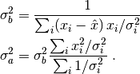
The estimates of uncertainties in the fitting parameters depend explicitly on  and will only be meaningful if (i) and (ii) the estimates of the uncertainties are accurate.
and will only be meaningful if (i) and (ii) the estimates of the uncertainties are accurate.
You can find more information, including a derivation of Eq. (16), in Data Reduction and Error Analysis for the Physical Sciences, 3rd ed by P. R. Bevington & D. K. Robinson, McGraw-Hill, New York, 2003.
Anonymous functions (lambda)¶
Python provides another way to generate functions called lambda expressions. A lambda expression is a kind of in-line function that can be generated on the fly to accomplish some small task. You can assign lambda functions a name, but you don’t need to; hence, they are often called anonymous functions. A lambda uses the keyword lambda and has the general form
lambda arg1, arg2, ... : output
The arguments arg1, arg2, ... are inputs to a lambda, just as for a functions, and the output is an expression using the arguments.
While lambda expressions need not be named, we illustrate their use by comparing a conventional Python function definition to a lambda expression to which we give a name. First, we define a conventional python function
In [1]: def f(a, b):
...: return 3*a+b**2
In [2]: f(2,3)
Out[2]: 15
Next, we define a lambda that does the same thing
In [3]: g = lambda a, b : 3*a+b**2
In [4]: g(2,3)
Out[4]: 15
The lambda defined by g does the same thing as the function f. Such lambda expressions are useful when you need a very short function definition, usually to be used locally only once or a few times.
Sometimes lambda expressions are used in function arguments that call for a function name, as opposed to the function itself. Moreover, in cases where a the function to be integrated is already defined but is a function one independent variable and several parameters, the lambda expression can be a convenient way of fashioning a single variable function. Don’t worry if this doesn’t quite make sense to you right now. You will see examples of lambda expressions used in just this way in the section Numerical integration.
There are also a number of nifty programming tricks that can be implemented using lambda expressions, but we will not go into them here. Look up lambdas on the web if you are curious about their more exotic uses.
Exercises¶
Write a function that can return each of the first three spherical Bessel functions 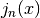:
(17)

Your function should take as arguments a NumPy array
and the order , and should return an array of the designated order spherical Bessel function. Take care to make sure that your functions behave properly at .Demonstrate the use of your function by writing a Python routine that plots the three Bessel functions for 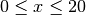. Your plot should look like the one below. Something to think about: You might note that 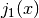 can be written in terms of 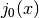, and that
 can be written in terms of and . Can you take advantage of this to write a more efficient function for the calculations of and ?
can be written in terms of and . Can you take advantage of this to write a more efficient function for the calculations of and ?- Write a function that simulates the rolling of dice. Use the NumPy function random.random_integers(6), which generates a random integer between 1 and 6 with equal probability (like rolling fair dice). The input of your function should be the number of dice thrown each roll and the output should be the sum of the dice.
- “Roll” 2 dice 10,000 times keeping track of all the sums of each set of rolls in a list. Then use your program to generate a histogram summarizing the rolls of two dice 10,000 times. The result should look like the histogram plotted below. Use the MatPlotLib function hist (see http://matplotlib.org/api/pyplot_summary.html) and set the number of bins in the histogram equal to the number of different possible outcomes of a roll of your dice. For example, the sum of two dice can be anything between 2 and 12, which corresponds to 11 possible outcomes. You should get a histogram that looks like the one below.
- “Repeat part (b) using 3 dice and plot the resulting histogram.
- Write a function that simulates the rolling of
Write a function to draw a circular smiley face with eyes, a nose, and a mouth. One argument should set the overall size of the face (the circle radius). Optional arguments should allow the user to specify the
position of the face, whether the face is smiling or frowning, and the color of the lines. The default should be a smiling blue face centered at 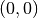. Once you write your function, write a program that calls it several times to produce a plot like the one below (creative improvisation is encouraged!). In producing your plot, you may find the call plt.axes().set_aspect(1) useful so that circles appear as circles and not ovals. You should only use MatPlotLib functions introduced in this text. To create a circle you can create an array of angles that goes from 0 to  and then produce the and
and then produce the and  arrays for your circle by taking the cosine and sine, respectively, of the array. Hint: You can use the same arrays to make the smile and frown as you used to make the circle by plotting appropriate slices of those arrays. You do not need to create new arrays.
arrays for your circle by taking the cosine and sine, respectively, of the array. Hint: You can use the same arrays to make the smile and frown as you used to make the circle by plotting appropriate slices of those arrays. You do not need to create new arrays.In the section Example: linear least squares fitting, we showed that the best fit of a line
 to a set of data
to a set of data  is obtained for the values of and given by Eq. (10). Those formulas were obtained by finding the values of and that minimized the sum in Eq. (5). This approach and these formulas are valid when the uncertainties in the data are the same for all data points. The Python function LineFit(x, y) in the section Example: linear least squares fitting implements Eq. (10).
is obtained for the values of and given by Eq. (10). Those formulas were obtained by finding the values of and that minimized the sum in Eq. (5). This approach and these formulas are valid when the uncertainties in the data are the same for all data points. The Python function LineFit(x, y) in the section Example: linear least squares fitting implements Eq. (10).Write a new fitting function LineFitWt(x, y) that implements the formulas given in Eq. (14) that minimize the
function give by Eq. (12). This more general approach is valid when the individual data points have different weightings or when they all have the same weighting. You should also write a function to calculate the reduced chi-squared 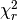 defined by Eq. (12).Write a Python program that reads in the data below, plots it, and fits it using the two fitting functions LineFit(x, y) and LineFitWt(x, y). Your program should plot the data with error bars and with both fits with and without weighting, that is from LineFit(x, y) and LineFitWt(x, y, dy). It should also report the results for both fits on the plot, similar to the output of the supplied program above, as well as the values of , the reduce chi-squared value, for both fits. Explain why weighting the data gives a steeper or less steep slope than the fit without weighting.
1 2 3 4 5 6 7 8 9 10 11 12 13
Velocity vs time data for a falling mass time (s) velocity (m/s) uncertainty (m/s) 2.23 139 16 4.78 123 16 7.21 115 4 9.37 96 9 11.64 62 17 14.23 54 17 16.55 10 12 18.70 -3 15 21.05 -13 18 23.21 -55 10
Modify the function LineFitWt(x, y) you wrote in Exercise 4 above so that in addition to returning the fitting parameters
and , it also returns the uncertainties in the fitting parameters  and
and  using the formulas given by Eq. (16). Use your new fitting function to find the uncertainties in the fitted slope and -intercept for the data provided with Exercise 4.
using the formulas given by Eq. (16). Use your new fitting function to find the uncertainties in the fitted slope and -intercept for the data provided with Exercise 4.
Table Of Contents
- Functions
- User-defined functions
- Methods and attributes
- Example: linear least squares fitting
- Anonymous functions (lambda)
- Exercises